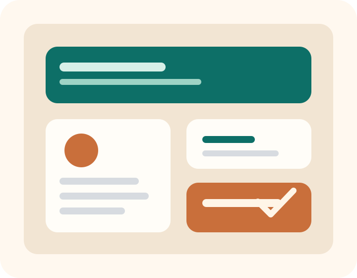
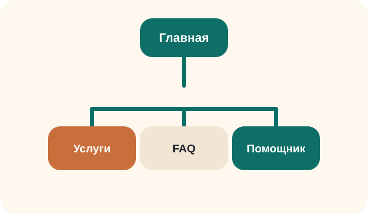

Подготовка к визиту
Памятки по популярным обращениям помогают заранее собрать документы и сократить время консультации.
Учебный web-сайт для практики
Сайт разработан как учебный проект по итогам практики в МФЦ города Ижевска. Он помогает быстро понять, какие услуги доступны, как подготовиться к визиту и какие документы взять с собой.

Назначение сайта
Памятки по популярным обращениям помогают заранее собрать документы и сократить время консультации.
Навигация по разделам показывает, куда перейти для получения информации о процедуре и сроках.
Адаптированный модуль подбирает чек-лист документов для посетителя по выбранной услуге.
Почему именно такой формат
Снижается количество повторных визитов, потому что гражданин заранее получает понятный перечень действий и документов.
Сайт можно использовать как дополнительный информационный ресурс во время консультации или при удаленной подготовке заявителя.
Маршрут по сайту

Главная знакомит с назначением ресурса и быстрыми переходами.
Услуги содержит перечень популярных обращений и этапы получения услуги.
Помощник реализует адаптацию ресурса для автоматизации подготовки к визиту.
FAQ отвечает на типовые вопросы и содержит контактную информацию.